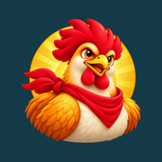

Suporte oficial
Galo Odyssey
A aventura de Brasa e Trovão por sete regiões, entre águas, cipós e chefes.
Precisa de ajuda com o jogo?
Escreva para lailsonlcosta@gmail.com. Se puder, diga qual aparelho usa, a versão do jogo e o que aconteceu. Não envie senhas, documentos ou dados de crianças.
Responsável: Lailson Costa.
Onde fica meu progresso?
O jogo salva progresso e ajustes no aparelho. A campanha funciona sem internet. Apagar os dados do aplicativo ou desinstalá-lo pode remover o progresso.